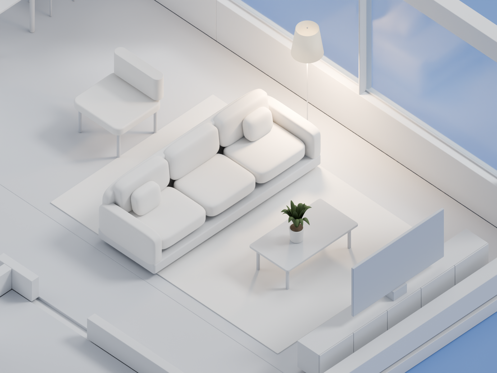
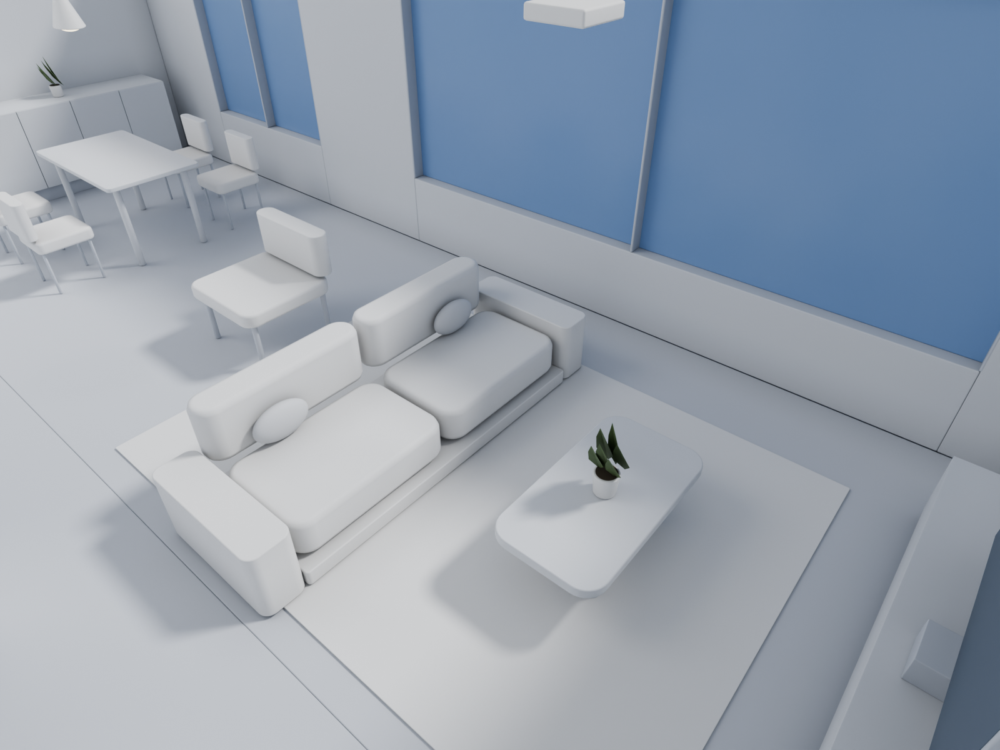

极简白模 · 客厅样板
第三轮：沙发软包、薄边茶几、阔叶植物、透明玻璃与局部暖光。保留原户型和家具外包尺寸。

客厅轴测 · 1600 × 1200 · Cycles 96采样。近端墙为展示剖切。
同一相机，比较前后
拖动滑块：左侧为本轮，右侧为上一轮。上一轮使用其原有模型、材质和灯光，重新按本轮客厅透视相机渲染。


 用户提供的参考图；户型不同，比较材质、造型与光影质感。
用户提供的参考图；户型不同，比较材质、造型与光影质感。 本轮整屋轴测 · 客厅细化放回原户型。
本轮为表现候选。新增落地灯与盆栽属于表现附加物，未写入采购、预算或工程灯位。其他房间沿用上一轮家具细节。原始项目模型与既有风格输出保留。
本轮整屋轴测 · 客厅细化放回原户型。
本轮为表现候选。新增落地灯与盆栽属于表现附加物，未写入采购、预算或工程灯位。其他房间沿用上一轮家具细节。原始项目模型与既有风格输出保留。